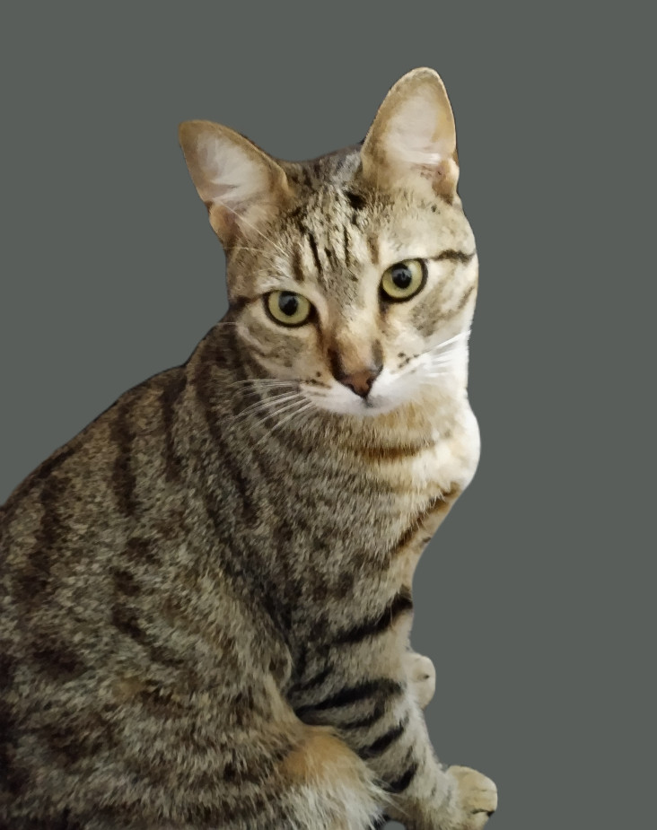
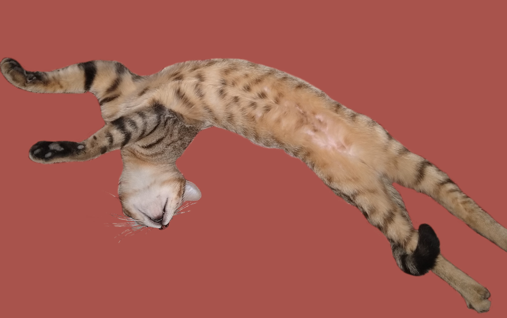
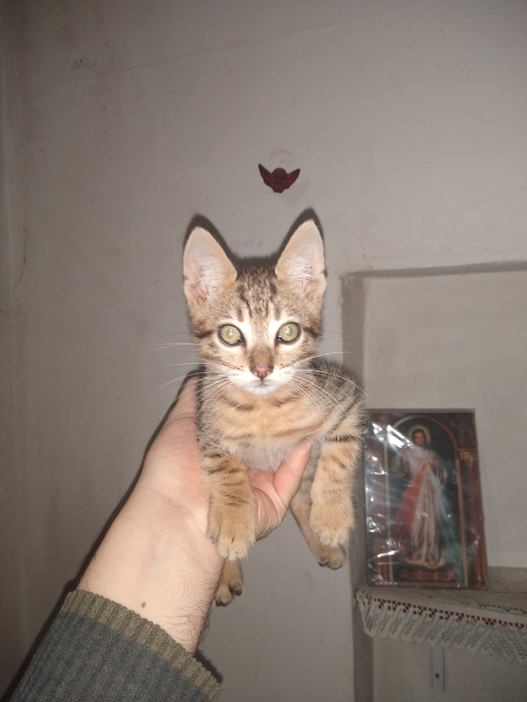

Pipo, un gato color pardo nacido en el hermoso pueblo de Villaguay, Entre Ríos, en el año 2022, ha llevado una vida fascinante y llena de misterio. Desde el momento en que llegó a este mundo, cautivó el corazón de su dueña Mirta con su pelaje suave y ojos curiosos.
Desde joven, Pipo mostró una predilección por las cosas simples de la vida. A diferencia de otros gatos, no anhelaba la aventura en el exterior. En cambio, encontraba felicidad en los pequeños placeres de la vida, como comer y dormir. Su amor por la comida se convirtió en algo legendario en el vecindario, y Mirta siempre tenía que asegurarse de que las provisiones estuvieran a salvo, ya que Pipo tenía un talento especial para encontrar y abrir cualquier bolsa de comida que se interpusiera en su camino.
A pesar de su amor por la comida, Pipo también era conocido por su sigilo. Se movía como una sombra en la noche, deslizándose sin ser visto y sorprendiendo a todos con su habilidad para aparecer de la nada. Sus movimientos gráciles y sigilosos se convirtieron en su sello distintivo, dejando a todos maravillados por su destreza.
La relación entre Pipo y Mirta era algo especial. Aunque Pipo podía ser independiente, tenía un lazo profundo con su dueña. Siempre encontraba una manera de acurrucarse en su regazo durante las noches frías o descansar cerca de ella mientras leía un libro. Mirta se enamoró perdidamente de Pipo y encontró consuelo en su presencia tranquila y amorosa.
